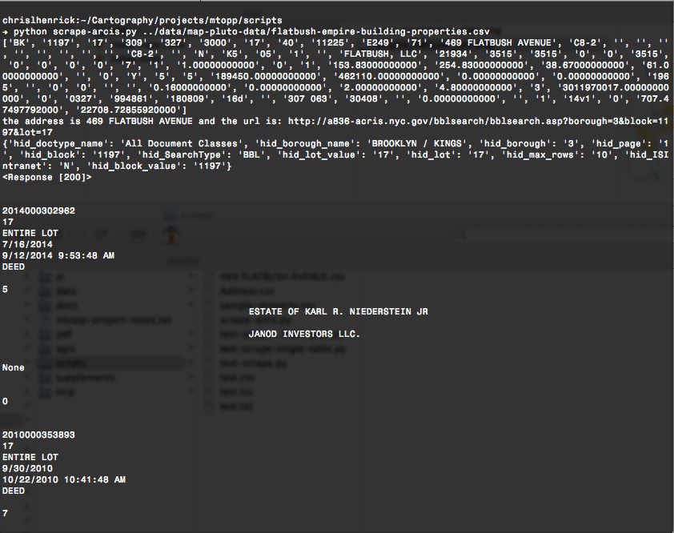

MFA DT
Thesis Proposal
Chris Henrick
Concept:
To utilize D&T to prevent the displacement of NYC residents from hyper-gentrification.
Problem:
Most NYC residents
are not aware of city planning processes & developers have too much political power.
Prototypes
Goals:
One: Educate tenants about their rights around rent regulation.
Goals:
Two: Motivate tenants to take action to protect themselves.
Research:There exists a discrepancy between registered and non-registered rent-stabilized apartments.
map
Goal:
To simplify and improve access to open data on NYC properties.
Research:
Access to & use of government data on NYC properties is not user friendly

Research:
Activist groups need access to and knowledge of this data.
But, the data by itself or visualized will not solve the problem.
Moving Forward
Goal:
Utilize open data to garner civic action to combat displacement.
Goal:
Incorporating personal narratives of those affected by displacement.
End Product:
A walking tour of narratives of displacement in Bushwick.
"Talk is cheap. So are pixels and kilobytes. Influence and effect comes with practice. And practices. We are our productions -- cartographic, academic, capitalistic. To shy from action for fear of false steps is to fail"- Matthew W. Wilson
end.